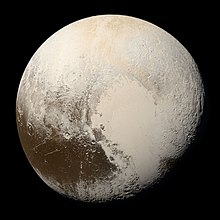
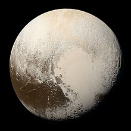

Our solar system consists of our star, the Sun, and everything bound to it by gravity – the planets Mercury, Venus, Earth, Mars, Jupiter, Saturn, Uranus, and Neptune; dwarf planets such as Pluto; dozens of moons; and millions of asteroids, comets, and meteoroids.
The planets and other large objects in orbit around the Sun lie near the plane of Earth's orbit, known as the ecliptic. Smaller icy objects such as comets frequently orbit at significantly greater angles to this plane. Most of the planets in the Solar System have secondary systems of their own, being orbited by natural satellites called moons. Many of the largest natural satellites are in synchronous rotation, with one face permanently turned toward their parent. The four giant planets have planetary rings, thin bands of tiny particles that orbit them in unison.
The overall structure of the charted regions of the Solar System consists of the Sun, four smaller inner planets surrounded by a belt of mostly rocky asteroids, and four giant planets surrounded by the Kuiper belt of mostly icy objects. Astronomers sometimes informally divide this structure into separate regions. The inner Solar System includes the four terrestrial planets and the asteroid belt. The outer Solar System is beyond the asteroids, including the four giant planets. Since the discovery of the Kuiper belt, the outermost parts of the Solar System are considered a distinct region consisting of the objects beyond Neptune.
The astronomical unit [AU] (150,000,000 km; 93,000,000 mi) would be the distance from the Earth to the Sun if the planet's orbit were perfectly circular.[38] For comparison, the radius of the Sun is 0.0047 AU (700,000 km; 400,000 mi). Thus, the Sun occupies 0.00001% (10−5 %) of the volume of a sphere with a radius the size of Earth's orbit, whereas Earth's volume is roughly one millionth (10−6) that of the Sun. Jupiter, the largest planet, is 5.2 astronomical units (780,000,000 km; 480,000,000 mi) from the Sun and has a radius of 71,000 km (0.00047 AU; 44,000 mi), whereas the most distant planet, Neptune, is 30 AU (4.5×109 km; 2.8×109 mi) from the Sun.


 
